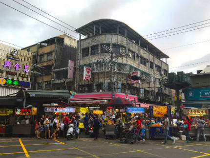

網站導覽簡介：
歡迎來到我製作的網頁！
希望能透過這幾個網頁
展示我製作網頁上的基本能力
所有的網站都能用手機觀看
網頁中每一個功能上方都有簡單的介紹
也很歡迎觀看我在Github上的製作過程（選單左上角）
如果有任何的問題歡迎告訴我～～～
希望能透過這幾個網頁
展示我製作網頁上的基本能力
所有的網站都能用手機觀看
網頁中每一個功能上方都有簡單的介紹
也很歡迎觀看我在Github上的製作過程（選單左上角）
如果有任何的問題歡迎告訴我～～～
幻燈片的功能展示：
以下是常見的幻燈片功能
除了自動翻頁外，還可以按前後頁或是下方的點來手動翻頁
除了自動翻頁外，還可以按前後頁或是下方的點來手動翻頁
Google Map的功能展示：
以下用Google API標記了7個夜市地點
有三種方式（複選框, 關鍵字搜尋, 下拉式選單）可以來搜尋已經標記好的7個夜市
點擊夜市地點的icon可以放大並移動到所選擇的夜市
有三種方式（複選框, 關鍵字搜尋, 下拉式選單）可以來搜尋已經標記好的7個夜市
點擊夜市地點的icon可以放大並移動到所選擇的夜市
依夜市名稱搜尋
士林夜市
地址： 111台北市士林區基河路101號
電話：(02)2881-5557
商家數量： 1F：226個攤位; B1：94個攤位
開放時間： 16:00–00:00
開幕日期： 1909年
饒河街觀光夜市
地址： 105台北市松山區饒河街
電話：(02)2763-5733
開放時間： 16:00–00:00
開幕日期： 1987年
饒河：滿語意為「禽獸眾多之地」
三和夜市
地址： 241新北市三重區中央北路
電話：無
總長度：約800公尺
開放時間： 16:00–00:00
早上為傳統市場中央市場，晚上則是三和夜市

樂華夜市
地址： 234新北市永和區永平路
電話： (02)2232-9711
開放時間： 16:00–01:00
地點：捷運頂溪站附近
一中商圈
地址： 404台中市北區一中街
電話：無
開放時間： 11:00–22:10
開幕日期： 1980年代
2006年據國立中興大學調查，獲選為台中市最受歡迎的商圈
逢甲夜市
地址：407台中市西屯區文華路
電話：(04)2451-5940
開放時間： 16:00–02:00
遠見雜誌「全台夜市遊逛」調查中，獲得臺灣最喜愛的夜市
觀光局「2010年特色夜市選拔活動」中，取得「台灣最美味夜市」頭銜
花園夜市
地址：704台南市北區海安路三段533號
電話：(06)358-3867
開放時間： 17:00–00:00
商家數量： 近400個攤位
曾於2013年榮登Facebook全球熱門打卡地點第12名